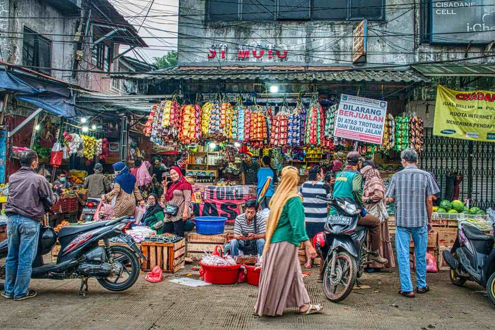

LocalMart adalah sebuah Website yang mengumpulkan Lokasi-Lokasi, serta Kontak dari Toko-Toko kecil disekitar Jawa Timur untuk mempermudah Pembelian Kepada Toko Kecil Lokal!
LocalMart dibuat untuk mempermudah para IRT untuk mendapatkan segala macam Produk Kebutuhan Rumah lebih mudah!
Dan bukan hanya itu, LocalMart juga bertujuan untuk meningkatkan pendapatan UMKM lokal dengan cara membuka sebuah cabang pemesanan yang mudah, efisien, serta simpel!
Apakah manfaat dariLocalMart?
Mempermudah Akses Sembako kepada IRT atau User lainnya, memungkinkan untuk mereka memesan Produk Sembako tanpa memerlukan Kontak Langsung.
Mewujudkan sebuah cabang pendapatan tambahan bagi para Pemilik Toko UMKM lokal tanpa ribet.